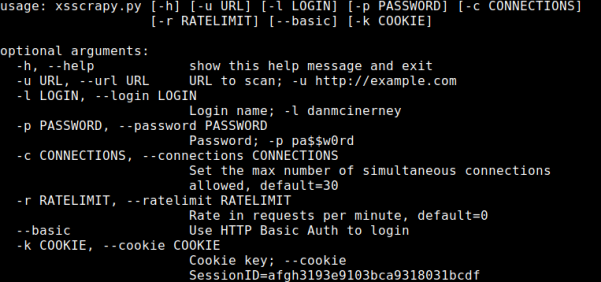

XSScrapy
GitHub:
https://github.com/DanMcInerney/xsscrapyWARNING: no more updates from 2019
WARNING: give error ImportError: cannot import name
suppress
DO NOT USE IT
XSScrapy takes a different, and more efficient, approach to XSS discovery than most
tools.
Rather than use a big set of XSS injection payloads, XSScrapy simply starts by looking for evidence of
reflection of innocuous input.
1. uses the input
9zqjx as its injection string.
2. After
injecting this string in various places, XSScrapy leverages its spidering capabilities to discern whether, and more
importantly, where
9zqjx is found in the response traffic.
3. When the reflected input is
discovered, the tool injects one of three different payloads to determine successful injection and filtering
employed by the application.
root@kali:/# git clone https://github.com/krvaibhaw/xsscrapy.git
root@kali:/# wget https://bootstrap.pypa.io/pip/2.7/get-pip.py
root@kali:/# python get-pip.py
root@kali:/# pip install -r requirements.txt
root@kali:/# ./xsscrapy.py -h
root@kali:/#
